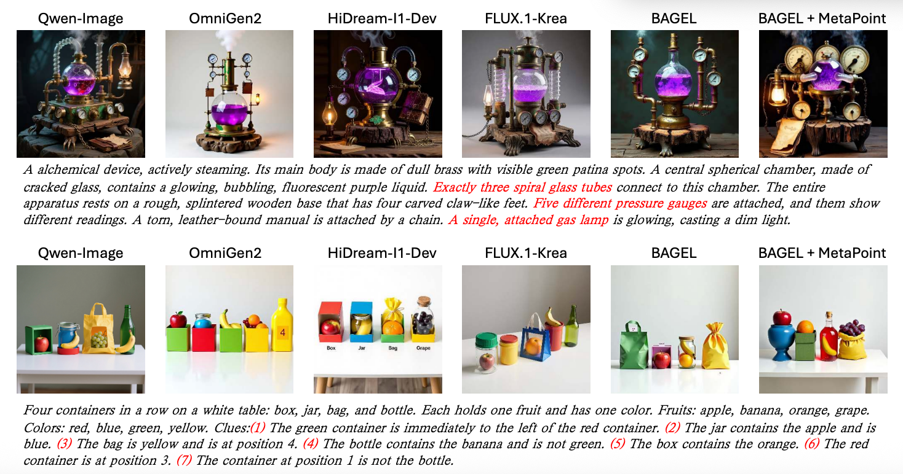

|
Ji Xie I am an incoming PhD student at CMU LTI. I am currently a research intern at Bytedance Seed, advised by Xun Wang. Previously, I was a visiting student at the Berkeley AI Research (BAIR) Lab, UC Berkeley, advised by Prof. XuDong Wang and Prof. Trevor Darrell. My interests span from applications to fundamental principles. My current research focuses on foundation multimodal models and their applications. Email / Google Scholar / CV / GitHub / Twitter |
|
Favorite Works |

|
Reconstruction Alignment Improves Unified Multimodal Models
, Trevor Darrell, Luke Zettlemoyer, Xudong Wang ICLR 2026 paper / code / model Unlocking the massive zero-shot potential in unified multimodal models through self-supervised learning. |
|
 |
MetaPoint: Unlocking Precise Spatial Control in Agentic Visual Generation
Dewei Zhou*, Xinyu Huang*, Xun Wang*†, Ji Xie, Yabo Zhang, Liang Li, Kunchang Li, Zongxin Yang, Yi Yang * denotes equal contribution, † denotes project lead Seed Technical Report 2026 paper MetaPoint enables precise point-based spatial control for agentic visual generation. |

|
In-Context Edit: Enabling Instructional Image Editing with In-Context Generation in Large-Scale Diffusion Transformer
Zechuan Zhang, , Yu Lu, Zongxin Yang, Yi Yang NeurIPS 2025 paper / code (2K Stars🌟) / model Image editing is worth a single LoRA! With only 0.1% training data, ICEdit delivers fantastic instructional image editing. |
Experience |
|
Visiting Student, Berkeley AI Research (BAIR), UC Berkeley
2025.3 ~ Now |
|
|
Research Intern, Bytedance Seed
2025.10 ~ Now |
Invited Talks |
|
"Reconstruction Alignment Improves Unified Multimodal Model"
Apple Research · Invited Talk · Hosted by Chen Chen and Yinfei Yang October 2025 |
Selected Honors & Awards |
|
SenseTime Scholarship
Top 30 recipients annually in China June 2025 |
|
Zhejiang Provincial Government Scholarship
December 2024, December 2023 |
|
Zhejiang Provincial Higher Mathematics Competition, First Prize
June 2024 |
|
Zhejiang Provincial Collegiate Programming Contest, Gold Medal
April 2024, April 2023 |
|
International Collegiate Programming Contest (ICPC), Shenyang Site Gold Medal
October 2022 |
|
China Collegiate Programming Contest (CCPC), Guangzhou Site Gold Medal
October 2022 |
MiscellaneousI have competitive-programming experience in ACM/ICPC and achieved a rating of 2478 on Codeforces. You can find my old blog here — it contains my competitive-programming notes :) |
|
Website template from Jon Barron |